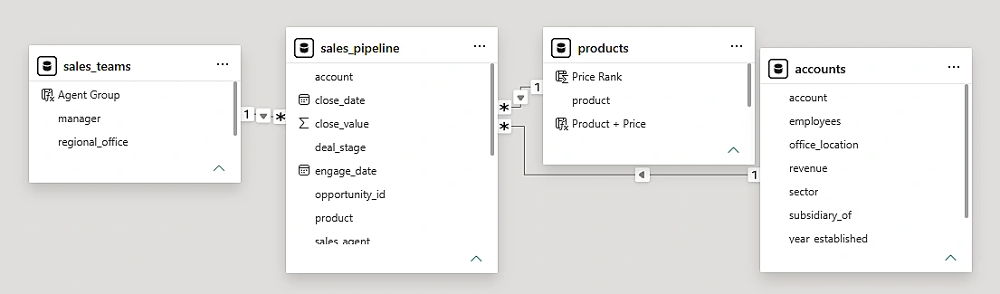
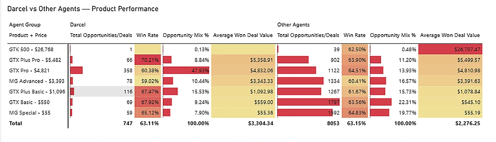
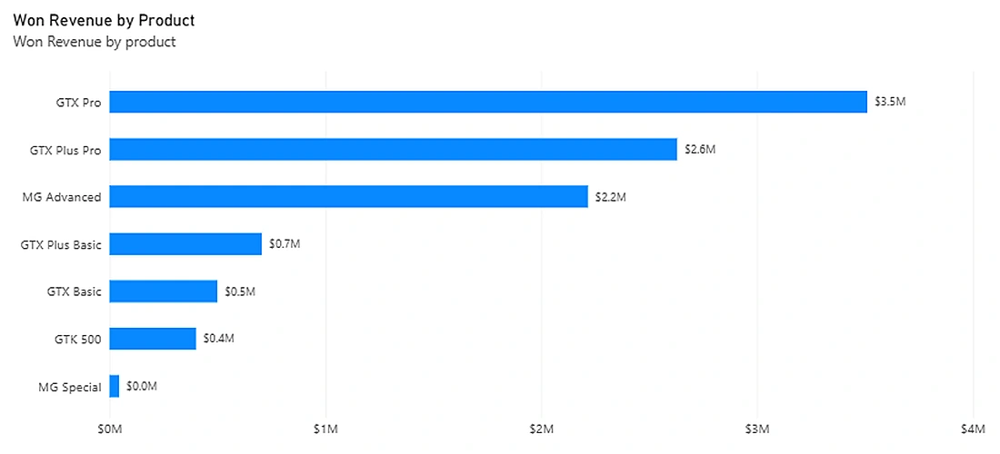
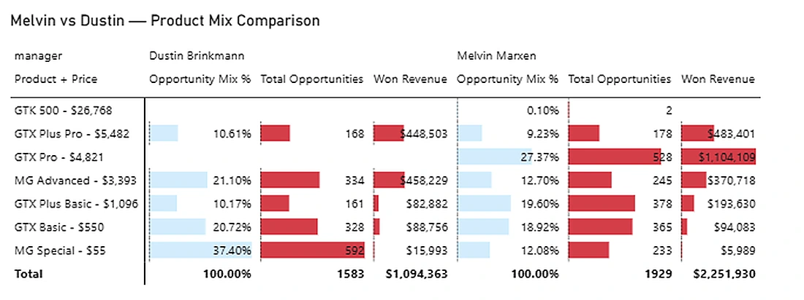
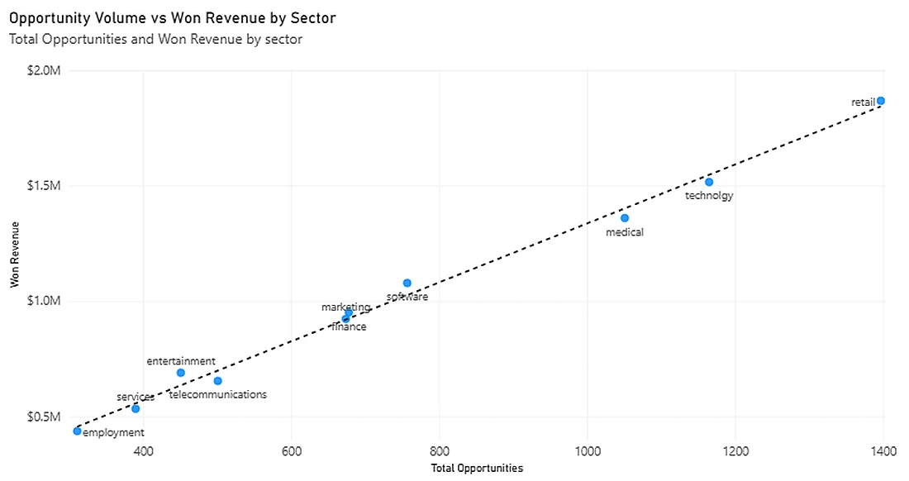

CRM Sales Pipeline
Analysis.
Understanding what drives higher Won Revenue across sales agents, products, managers, regions and customer sectors.
What drives stronger sales performance?
I analysed a B2B sales pipeline from a computer hardware company to understand where the strongest sales results were coming from and what appeared to be driving the differences across the sales pipeline.
The CRM Sales Opportunities dataset, obtained from the Maven Analytics Data Playground, contains 8,800 opportunities alongside information on sales teams, products and customer accounts.
Rather than looking only at who generated the most revenue, I wanted to investigate four areas: individual agents, products, managers and regions, and customer sectors.
Preparing the data before analysing it.
I worked with four related tables covering sales opportunities, products, customer accounts and sales teams. I used a fact-and-dimension model in Power BI, created DAX measures and checked data quality before comparing performance.
Data cleaning — Corrected a product-name mismatch between GTXPro and GTX Pro in Power Query.
Data quality — Investigated 1,425 opportunities without a customer sector. All were still open, so I retained them in the dataset but excluded the blank category from the sector comparison.
Measures and analysis — Built measures including Won Revenue, Won Deals, Win Rate, Average Won Deal Value and Opportunity Mix %.

The patterns behind the performance.
Higher revenue didn't mean a higher overall Win Rate.
Darcel Schlechet generated the most Won Revenue at around $1.15M. His Win Rate was almost identical to the company average, but he handled 65.6% more opportunities than the next-highest agent and had a much larger share of higher-value products.

What this suggests: Darcel's revenue lead appears to be linked more to opportunity volume and product mix than to a much higher overall conversion rate.
A smaller share of opportunities generated most of the revenue.
GTX Pro and GTX Plus Pro generated around 61% of total Won Revenue despite accounting for only around 28% of opportunities. Lower-value products could have high opportunity volumes without generating the same revenue.

What this suggests: Product value matters alongside opportunity volume. Price alone is not enough without a sufficient number of opportunities.
Product mix helped explain differences between managers.
West was the highest-revenue region, while Melvin Marxen generated the most revenue among managers. Comparing Melvin with Dustin Brinkmann in the same region showed an important difference: 36.70% of Melvin's opportunities involved the three highest-priced products, versus 10.61% for Dustin.

What this suggests: Differences in revenue cannot be explained by Win Rate alone. Opportunity volume and exposure to higher-value products both appear important.
Revenue broadly increased with opportunity volume.
Retail generated the highest Won Revenue at approximately $1.87M and also had the most opportunities. Its Win Rate and Average Won Deal Value were both close to the overall averages. The scatter chart showed a strong positive relationship between opportunity volume and revenue across sectors.

What this suggests: Retail's lead appears largely linked to having more opportunities, rather than an unusually strong Win Rate.
What the business could investigate next.
Based on the findings, I would focus on three areas before making changes to the sales strategy.
Review opportunity allocation
Understand why some agents, managers and sectors receive more opportunities, and look at the value and type of products involved before reallocating them.
Investigate higher-value product opportunities
Explore whether more opportunities could be generated for GTX Pro and GTX Plus Pro, and why some teams have greater exposure to these products.
Assess team performance in context
Consider opportunity volume and product mix alongside Win Rate, and investigate strong performance on particular products that other agents might learn from.
Further area to investigate: Finance had the lowest sector Win Rate at 61.17% but one of the highest Average Won Deal Values. Understanding why its conversion is lower could be useful.
What the data doesn't tell us.
Although opportunity volume, product mix and Won Revenue were closely linked in the analysis, that doesn't prove these factors alone caused the differences in performance. More information about customer demand, opportunity quality and how leads are allocated would be needed before recommending major changes.